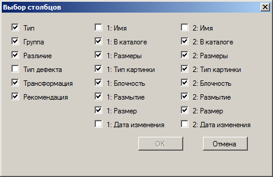

Главное меню
При помощи главного меню можно настраивать внешний вид программы, а так же осуществлять все основные операции. Наиболее важные и часто используемы пункты этого меню вынесены на панель инструментов. Ниже подробно описано содержание главного меню:
Файл
Меню Файл содержит следующие пункты:
Сохранить результаты - данный пункт меню позволяет сохранить в файл результаты поиска под любым именем. Выбранное имя потом будет использоваться при автоматическом сохранении и восстановлении результатов.
Загрузить результаты - нажав на этот пункт можно загрузить ранее сохранённые результаты. Выбранное имя затем будет использоваться при автоматическом сохранении и восстановлении результатов.
Выход - при нажатии на этот пункт программа завершит работу.
Правка
Меню Правка содержит следующие пункты:
Отменить (Ctrl-Z) - позволяет отменить последнее действие пользователя по удалению, перемещению, переименованию картинок, а также отметку об ошибочном результате. Всего может быть отменено подряд до 10 операций. Особо отметим, что операции "загрузить результаты", "начать поиск" и "обновить результаты" являются неотменяемыми. Данный пункт продублирован на панели инструментов.
Повторить (Ctrl-Y) - позволяет повторить ранее отмененное действие. Данный пункт продублирован на панели инструментов.
Выделить все (Ctrl-A) - позволяет выделить все результаты поиска.
Вид
Меню Вид содержит следующие пункты:
Панель инструментов - данный пункт меню определяет видимость панели инструментов. По умолчанию данный пункт включен.
Строка состояния - данный пункт меню определяет видимость строки состояния. По умолчанию данный пункт включен.
Язык - данный пункт меню определяет язык интерфейса программы. По умолчанию это может быть русский или английский, но пользователь может добавить и перевод на свой родной язык. Для этого нужно в каталоге data\resources\strings, создать собственную версию файла строковых ресурсов в xml-формате.
Режим просмотра результатов - в данном пункте меню можно выбрать режим просмотра результатов (Таблица вертикальных пар или Таблица горизонтальных пар). По умочанию используется режим просмотра результатов в виде Таблицы вертикальных пар.
Выбор столбцов - вызывает окно, в котором можно регулировать видимость столбцов таблицы результатов. Для таблицы вертикальных пар оно имеет следующий вид:

А для таблицы горизонтальных пар такой:
Горячие клавиши - вызывает окно, в котором пользователь может изменить используемые в программе горячие клавиши.
Растягивать небольшие изображения - данный пункт меню определяет нужно ли растягивать небольшие изображения до размеров панели просмотра. По умолчанию данный пункт выключен.
Пропорциональный размер картинок - при включении данного пункта меню, пары изображений отображаются в одном масштабе на панели просмотра. По умолчанию данный пункт включен.
Поиск
Меню Поиск содержит следующие пункты:
Начать поиск - выбрав данный пункт, можно начать поиск. Данный пункт продублирован на панели инструментов.
Обновить результаты - выбрав данный пункт, можно обновить результаты поиска. Это иногда бывает необходимо сделать, если пользователь удалил или переместил картинки из списка при помощи какой-либо внешней программы. В этом случае ссылки на картинки, которые хранятся в программе становятся не действительными. Для удаления этих недействительных ссылок из списка результатов и нужна данная операция. Данный пункт меню продублирован на панели инструментов.
Обновить базу данных о картинках - выбрав данный пункт, можно обновить базу данных о картинках. Это иногда бывает необходимо сделать с целью оптимизации ее размера.
Пути - вызывает окно настройки путей либо его упрощенный вариант. Данный пункт продублирован на панели инструментов.
Опции - вызывает окно настройки опций. Пункт продублирован на панели инструментов.
Один путь поиска - данный пункт меню включает/выключает использование упрощенного варианта окна настройки путей. По умолчанию данный параметр выключен.
Использовать базу данных о картинках - данный пункт меню определяет нужно ли использовать при поиске базу данных о ранее сканированных изображениях. По умолчанию данный параметр включен.
Проверять результаты при загрузке - данный пункт меню определяет нужно ли проверять результаты при загрузке. По умолчанию данный параметр включен.
Проверять базу данных об ошибках при загрузке - данный пункт меню определяет нужно ли проверять базу данных об ошибках при загрузке. По умолчанию данный параметр включен.
Справка
Меню Справка содержит следующие пункты:
Справка - выбрав данный пункт, можно вызвать справку. Пункт продублирован на панели инструментов.
О программе... - данный пункт меню выводит краткую информацию о программе.
Проверять наличие обновлений - данный пункт меню включает/выключает проверку наличия новых версий программы.
Новая версия
Меню Новая версия имеет красный цвет. В обычном состоянии это меню скрыто от пользователя. Оно становится видимым в случае выхода новой версии программы. Номер этой ее версии отображается во всплывающей подсказке. При нажатии мышкой на это меню вы попадете на сайт программы, где сможете скачать новую версию программы.